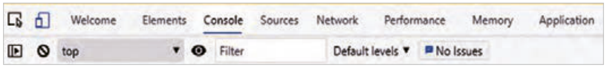

واکنش به کلیک، حرکت ماوس یا فشردن کلیدهای صفحهکلید توسط چه زبانی برنامهنویسی میشود؟
بازیهای ساده، اسلایدر تصاویر و منوهای بازشونده توسط چه زبانی ساخته میشوند؟
چگونه میتوان با کلیک روی یک دکمه، عملی را اجرا نمود؟
آیا امکان دسترسی به عناصر صفحه و تغییر محتوا و ویژگیهای آنها وجود دارد؟
آیا میتوان بدون بار گذاری دوباره صفحه، محتوای آن را تغییر داد؟
چگونه میتوان اعتبار اطلاعات وارد شده در فرم را پیش از ارسال بررسی نمود؟
محاسبات عددی و پردازش رشتههای ورودی کاربر چگونه انجام میشود؟
در پایان از هنرجو انتظار میرود
با استفاده از متغیرها، عملگرها و ساختارهای کنترلی، منطق موردنیاز برنامه را پیادهسازی کند.
نحوه تعریف وظایف تکراری را در قالب توابع بداند و از توابع داخلی جاوااسکریپت برای انجام سریعتر کارها استفاده نماید.
با استفاده از انتخابگرهای DOM، محتوا و ویژگیهای عناصر HTML را در پاسخ به رویدادهایکاربر تغییر دهد.
ورودیهای کاربر را در فرمها اعتبارسنجی کرده و در صورت وجود خطا، پیام مناسب نمایش دهد.
استاندارد عملکرد
بتواند با استفاده از Java Script بهصورت بهینه و امن، رفتارهای پویا و تعاملی را به صفحات وب اضافه کند و خروجی نهایی را در مرورگرهای مختلف اجرا کند.
صفحه ۱۹۳
تعریف جاوااسکریپت
در پودمان دوم، بخشهایی از صفحه اول یک فروشگاه اینترنتی با استفاده از HTML و CSS طراحی شد. این بخشها ماهیتی ایستا دارند و فاقد قابلیت تعامل با کاربر هستند؛ به این معنا که نمیتوانند در ازای ورودیهای کاربر (مانند کلیک یا تایپ) واکنش مناسبی (مانند نمایش پیام یا تغییر محتوا) ارائه دهند. در واقع HTML ساختار و محتوای صفحه وب را تعریف میکند و CSS سبک نمایش عناصر صفحه را تعیین میکند. برای تبدیل ساختار و ظاهر ایستای صفحه به یک تجربه کاربری پویا، تعریف رفتار و منطق صفحه ضروری است. زبان برنامهنویسی جاوااسکریپت با فراهم کردن بستر لازم برای مدیریت رویدادها و پردازش دادهها، امکان تعامل مستقیم با کاربر و تغییر پویای محتوای صفحه را بدون نیاز به بارگذاری مجدد، میسر میسازد. به بیان ساده، جاوااسکریپت مسئولیت پاسخگویی به اقدامات کاربر و پویا کردن رفتار عناصر صفحه را بر عهده دارد.
شکل ۱
جاوااسکریپت یک زبان برنامهنویسی سمت کاربر (Front-End) است، به این معنی که برای اجرای اسکریپتهای آن نیازی به وبسرور نیست و کدهای آن توسط مرورگر اجرا میشود. با اینحال جاوااسکریپت قابلیت اجرا روی سرور را به کمک Node.js دارد. جاوااسکریپت یک زبان مفسری است، مفسر جاوااسکریپت یک نرمافزار است که کدهای نوشته شده به زبان جاوااسکریپت را تجزیه کرده، سپس آنها را بهصورت خط به خط خوانده و اجرا میکند. مفسرهای جاوااسکریپت بهعنوان بخشی از مرورگرهای وب عمل میکنند. زبان جاوااسکریپت بهعنوان زبان اصلی سمت کاربر، با امکان دستکاری مستقیم مدل اشیای سند (DOM)، امکان تغییر ساختار و محتوای عناصر صفحه را در پاسخ به اقدامات کاربر فراهم میکند. این زبان با پشتیبانی از الگوهای برنامهنویسی شیءگرا و رویدادمحور، به توسعهدهندگان امکان میدهد که منطقهای پیچیده، اعتبارسنجی فرمها و ارتباطات غیرهمزمان با سرور را پیادهسازی کنند. همچنین، گسترش دامنه کاربرد این زبان از طریق محیطهای اجرا مانند Node.js، آن را به ابزاری چندمنظوره برای توسعه وباپلیکیشنهای تمامعیار تبدیل کرده است.
جاوااسکریپت توانایی اضافه کردن قابلیتهای مختلفی را به صفحه وب دارد که از جمله آنها میتوان به موارد زیر اشاره نمود:
سبد خرید پویا: امکان افزودن، حذف یا تغییر تعداد محصولات در سبد خرید بدون بارگذاری مجدد صفحه و محاسبه خودکار مجموع قیمت.
اعتبارسنجی فرمها: بررسی صحت اطلاعات وارد شده در فرم ثبتنام یا خرید (مانند شماره تماس، کد پستی و ایمیل) قبل از ارسال نهایی.
صفحه ۱۹۴
نمایش محصولات بهصورت پویا: فیلتر کردن محصولات بر اساس دستهبندی، قیمت یا برند و مرتبسازی لیست محصولات در لحظه.
اسلایدر و گالری تصاویر: ایجاد حرکت خودکار یا دستی تصاویر محصولات برای نمایش زوایای مختلف یک محصول.
منوی واکنشگرا (Responsive): باز و بسته شدن منوی موبایل با کلیک کاربر و نمایش مناسب در دستگاههای مختلف.
ارسال پیام (Notification): نمایش پیامهای موفقیت (مانند «محصول به سبد اضافه شد») یا خطا بهصورت پاپآپ (pop up)
تاریخ و ساعت: نمایش تاریخ شمسی یا ساعت جاری برای اطلاعرسانی به کاربر.
ذخیرهسازی موقت: نگهداری اطلاعات ورود یا تنظیمات کاربر در مرورگر (کوکیها) برای تجربه خرید آسانتر در بازدیدهای بعدی.
محیط توسعه (Development Environment)
برای شروع برنامهنویسی با جاوااسکریپت، نیاز به یک محیط توسعه مناسب است که امکان نوشتن کد، تست و اشکالزدایی آن را فراهم کند. مراحل آمادهسازی محیط توسعه جاوااسکریپت به شرح زیر است:
انتخاب و نصب ویرایشگر: برای کدنویسی با جاوااسکریپت میتوان از ویرایشگرهای مختلفی مانند VSCode، Sublime Text و Atom و ++Notepad استفاده نمود. این ویرایشگرها دارای امکاناتی نظیر رنگآمیزی کد، تکمیل خودکار کد و ابزارهای خطایابی (Debug) هستند که به بهبود کارایی و تجربه برنامهنویسی کمک میکنند.
انتخاب و نصب مرورگر وب: تمامی مرورگرهای مدرن امروزی همچون Google Chrome، Mozilla Firefox، Microsoft Edge و Safari امکان اجرای کدهای جاوااسکریپت را بهصورت پیشفرض دارند. به علاوه، این مرورگرها دارای ابزارهای توسعهدهنده (Developer tools) هستند که امکانات بیشتری را برای برنامهنویس وب فراهم میکنند. این ابزارها که توسط کلید F12 فعال میشوند، شامل کنسول، بخش Element (حاوی عناصر HTML و استایل عناصر)، Sources (منابع پروژه) و ... هستند (شکل2).

شکل ۲
صفحه ۱۹۵
افزودن جاوا اسکرپیت به یک صفحه وب
برای درج کدهای جاوااسکریپت در صفحه وب، از تگ <script></script> استفاده میشود. این تگ میتواند در بخش <head>، <body> مورد استفاده قرار گیرد. محل نوشتن کد جاوااسکریپت وابسته به نوع کد و نیازهای خاص پروژه است. با اینحال توصیه میشود که تا حد امکان این کدها قبل از تگ </body> نوشته شود. با انجام این کار ابتدا محتوای صفحه بهطور کامل بارگذاری شده و در معرض دید کاربر قرار میگیرد، سپس اسکریپتها اجرا میشوند، در نتیجه زمان بارگذاری صفحه کوتاهتر میشود. کدهای جاوااسکریپت میتوانند در یک فایل خارجی با پسوند js نوشته شوند. در این صورت فایل js باید به فایل html الحاق شود. در بخش بعد توضیحات بیشتری درباره روشهای فوق ارائه میشود.
شکل ۳
نوشتن کد جاوااسکریپت
یک کد جاوااسکریپت حاوی مجموعهای از دستورالعملهاست. هر دستورالعمل یک عملیات مجزا را تعریف میکند و با نقطهویرگول (;) از دستور بعدی جدا میشود. یکی از سادهترین و پرکاربردترین دستورات جاوااسکریپت، متدconsole.log() است که برای نمایش خروجی کد در کنسول مرورگر مورد استفاده قرار میگیرد. نحوه صحیح بهکارگیری این دستور به شکل زیر است:
console.log (رشته ثابت یا متغیر);
صفحه ۱۹۶
صفحه ۱۹۷
توضیحات (comments): جاوااسکریپت امکان ایجاد توضیحات تک خطی و چند خطی را توسط علائم // و /* */ فراهم میکند. نوشتن توضیحات برای روشن کردن هدف، عملکرد و منطق کد ضروری است. از علائم کامنت برای لغو اجرای موقت برخی کدها به منظور اشکالزدایی برنامه نیز استفاده میشود.
شکل ۴
متغیرها (Variables): جاوااسکریپت دارای دو کلمه کلیدی let و var برای تعریف متغیرها است. کلمه کلیدی var زمانی استفاده میشود که پشتیبانی از مرورگرهای قدیمی ضرورت داشته باشد. این کلمه تا سال 2015 برای تعریف متغیر استفاده میشد. از سال 2015 کلمه کلیدی let برای ایجاد متغیر معرفی شد.
Page 192
Learning unit 2
Have you ever thought about this
واکنش به کلیک، حرکت ماوس یا فشردن کلیدهای صفحهکلید توسط چه زبانی برنامهنویسی میشود؟
بازیهای ساده، اسلایدر تصاویر و منوهای بازشونده توسط چه زبانی ساخته میشوند؟
چگونه میتوان با کلیک روی یک دکمه، عملی را اجرا نمود؟
آیا امکان دسترسی به عناصر صفحه و تغییر محتوا و ویژگیهای آنها وجود دارد؟
آیا میتوان بدون بار گذاری دوباره صفحه، محتوای آن را تغییر داد؟
چگونه میتوان اعتبار اطلاعات وارد شده در فرم را پیش از ارسال بررسی نمود؟
محاسبات عددی و پردازش رشتههای ورودی کاربر چگونه انجام میشود؟
By the end, the student is expected to
با استفاده از متغیرها، عملگرها و ساختارهای کنترلی، منطق موردنیاز برنامه را پیادهسازی کند.
نحوه تعریف وظایف تکراری را در قالب توابع بداند و از توابع داخلی جاوااسکریپت برای انجام سریعتر کارها استفاده نماید.
با استفاده از انتخابگرهای DOM، محتوا و ویژگیهای عناصر HTML را در پاسخ به رویدادهایکاربر تغییر دهد.
ورودیهای کاربر را در فرمها اعتبارسنجی کرده و در صورت وجود خطا، پیام مناسب نمایش دهد.
Performance standard
بتواند با استفاده از Java Script بهصورت بهینه و امن، رفتارهای پویا و تعاملی را به صفحات وب اضافه کند و خروجی نهایی را در مرورگرهای مختلف اجرا کند.
Page 193
تعریف جاوااسکریپت
در پودمان دوم، بخشهایی از صفحه اول یک فروشگاه اینترنتی با استفاده از HTML و CSS طراحی شد. این بخشها ماهیتی ایستا دارند و فاقد قابلیت تعامل با کاربر هستند؛ به این معنا که نمیتوانند در ازای ورودیهای کاربر (مانند کلیک یا تایپ) واکنش مناسبی (مانند نمایش پیام یا تغییر محتوا) ارائه دهند. در واقع HTML ساختار و محتوای صفحه وب را تعریف میکند و CSS سبک نمایش عناصر صفحه را تعیین میکند. برای تبدیل ساختار و ظاهر ایستای صفحه به یک تجربه کاربری پویا، تعریف رفتار و منطق صفحه ضروری است. زبان برنامهنویسی جاوااسکریپت با فراهم کردن بستر لازم برای مدیریت رویدادها و پردازش دادهها، امکان تعامل مستقیم با کاربر و تغییر پویای محتوای صفحه را بدون نیاز به بارگذاری مجدد، میسر میسازد. به بیان ساده، جاوااسکریپت مسئولیت پاسخگویی به اقدامات کاربر و پویا کردن رفتار عناصر صفحه را بر عهده دارد.
Figure 1
جاوااسکریپت یک زبان برنامهنویسی سمت کاربر (Front-End) است، به این معنی که برای اجرای اسکریپتهای آن نیازی به وبسرور نیست و کدهای آن توسط مرورگر اجرا میشود. با اینحال جاوااسکریپت قابلیت اجرا روی سرور را به کمک Node.js دارد. جاوااسکریپت یک زبان مفسری است، مفسر جاوااسکریپت یک نرمافزار است که کدهای نوشته شده به زبان جاوااسکریپت را تجزیه کرده، سپس آنها را بهصورت خط به خط خوانده و اجرا میکند. مفسرهای جاوااسکریپت بهعنوان بخشی از مرورگرهای وب عمل میکنند. زبان جاوااسکریپت بهعنوان زبان اصلی سمت کاربر، با امکان دستکاری مستقیم مدل اشیای سند (DOM)، امکان تغییر ساختار و محتوای عناصر صفحه را در پاسخ به اقدامات کاربر فراهم میکند. این زبان با پشتیبانی از الگوهای برنامهنویسی شیءگرا و رویدادمحور، به توسعهدهندگان امکان میدهد که منطقهای پیچیده، اعتبارسنجی فرمها و ارتباطات غیرهمزمان با سرور را پیادهسازی کنند. همچنین، گسترش دامنه کاربرد این زبان از طریق محیطهای اجرا مانند Node.js، آن را به ابزاری چندمنظوره برای توسعه وباپلیکیشنهای تمامعیار تبدیل کرده است.
جاوااسکریپت توانایی اضافه کردن قابلیتهای مختلفی را به صفحه وب دارد که از جمله آنها میتوان به موارد زیر اشاره نمود:
سبد خرید پویا: امکان افزودن، حذف یا تغییر تعداد محصولات در سبد خرید بدون بارگذاری مجدد صفحه و محاسبه خودکار مجموع قیمت.
اعتبارسنجی فرمها: بررسی صحت اطلاعات وارد شده در فرم ثبتنام یا خرید (مانند شماره تماس، کد پستی و ایمیل) قبل از ارسال نهایی.
Page 194
نمایش محصولات بهصورت پویا: فیلتر کردن محصولات بر اساس دستهبندی، قیمت یا برند و مرتبسازی لیست محصولات در لحظه.
اسلایدر و گالری تصاویر: ایجاد حرکت خودکار یا دستی تصاویر محصولات برای نمایش زوایای مختلف یک محصول.
منوی واکنشگرا (Responsive): باز و بسته شدن منوی موبایل با کلیک کاربر و نمایش مناسب در دستگاههای مختلف.
ارسال پیام (Notification): نمایش پیامهای موفقیت (مانند «محصول به سبد اضافه شد») یا خطا بهصورت پاپآپ (pop up)
تاریخ و ساعت: نمایش تاریخ شمسی یا ساعت جاری برای اطلاعرسانی به کاربر.
ذخیرهسازی موقت: نگهداری اطلاعات ورود یا تنظیمات کاربر در مرورگر (کوکیها) برای تجربه خرید آسانتر در بازدیدهای بعدی.
محیط توسعه (Development Environment)
برای شروع برنامهنویسی با جاوااسکریپت، نیاز به یک محیط توسعه مناسب است که امکان نوشتن کد، تست و اشکالزدایی آن را فراهم کند. مراحل آمادهسازی محیط توسعه جاوااسکریپت به شرح زیر است:
انتخاب و نصب ویرایشگر: برای کدنویسی با جاوااسکریپت میتوان از ویرایشگرهای مختلفی مانند VSCode، Sublime Text و Atom و ++Notepad استفاده نمود. این ویرایشگرها دارای امکاناتی نظیر رنگآمیزی کد، تکمیل خودکار کد و ابزارهای خطایابی (Debug) هستند که به بهبود کارایی و تجربه برنامهنویسی کمک میکنند.
انتخاب و نصب مرورگر وب: تمامی مرورگرهای مدرن امروزی همچون Google Chrome، Mozilla Firefox، Microsoft Edge و Safari امکان اجرای کدهای جاوااسکریپت را بهصورت پیشفرض دارند. به علاوه، این مرورگرها دارای ابزارهای توسعهدهنده (Developer tools) هستند که امکانات بیشتری را برای برنامهنویس وب فراهم میکنند. این ابزارها که توسط کلید F12 فعال میشوند، شامل کنسول، بخش Element (حاوی عناصر HTML و استایل عناصر)، Sources (منابع پروژه) و ... هستند (شکل2).
Figure 2
Page 195
افزودن جاوا اسکرپیت به یک صفحه وب
برای درج کدهای جاوااسکریپت در صفحه وب، از تگ <script></script> استفاده میشود. این تگ میتواند در بخش <head>، <body> مورد استفاده قرار گیرد. محل نوشتن کد جاوااسکریپت وابسته به نوع کد و نیازهای خاص پروژه است. با اینحال توصیه میشود که تا حد امکان این کدها قبل از تگ </body> نوشته شود. با انجام این کار ابتدا محتوای صفحه بهطور کامل بارگذاری شده و در معرض دید کاربر قرار میگیرد، سپس اسکریپتها اجرا میشوند، در نتیجه زمان بارگذاری صفحه کوتاهتر میشود. کدهای جاوااسکریپت میتوانند در یک فایل خارجی با پسوند js نوشته شوند. در این صورت فایل js باید به فایل html الحاق شود. در بخش بعد توضیحات بیشتری درباره روشهای فوق ارائه میشود.
Figure 3
نوشتن کد جاوااسکریپت
یک کد جاوااسکریپت حاوی مجموعهای از دستورالعملهاست. هر دستورالعمل یک عملیات مجزا را تعریف میکند و با نقطهویرگول (;) از دستور بعدی جدا میشود. یکی از سادهترین و پرکاربردترین دستورات جاوااسکریپت، متدconsole.log() است که برای نمایش خروجی کد در کنسول مرورگر مورد استفاده قرار میگیرد. نحوه صحیح بهکارگیری این دستور به شکل زیر است:
console.log (رشته ثابت یا متغیر);
Page 196
Page 197
توضیحات (comments): جاوااسکریپت امکان ایجاد توضیحات تک خطی و چند خطی را توسط علائم // و /* */ فراهم میکند. نوشتن توضیحات برای روشن کردن هدف، عملکرد و منطق کد ضروری است. از علائم کامنت برای لغو اجرای موقت برخی کدها به منظور اشکالزدایی برنامه نیز استفاده میشود.
Figure 4
متغیرها (Variables): جاوااسکریپت دارای دو کلمه کلیدی let و var برای تعریف متغیرها است. کلمه کلیدی var زمانی استفاده میشود که پشتیبانی از مرورگرهای قدیمی ضرورت داشته باشد. این کلمه تا سال 2015 برای تعریف متغیر استفاده میشد. از سال 2015 کلمه کلیدی let برای ایجاد متغیر معرفی شد.